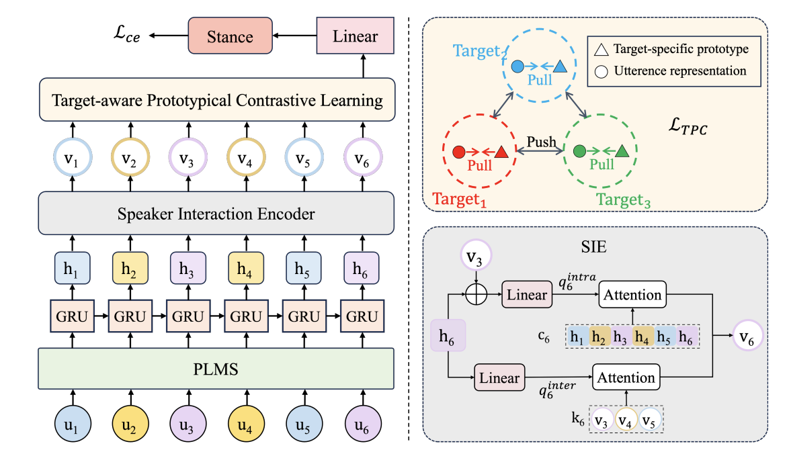

About
Interests
Publications ( / )
Enhancing Hyperbole and Metaphor Detection with Their Bidirectional Dynamic Interaction and Emotion Knowledge
ACL 2025
Multi-Granular Multimodal Clue Fusion for Meme Understanding
AAAI 2025
Reverse Multi-Choice Dialogue Commonsense Inference with Graph-of-Thought
AAAI 2024
Self-Adaptive Fine-grained Multi-modal Data Augmentation for Semi-supervised Multi-modal Coreference Resolution
ACM MM 2024
STPar: A Structure-Aware Triaffine Parser for Screenplay Character Coreference Resolution
TACL 2025
ECQED: Emotion-Cause Quadruple Extraction in Dialogs
TASLP 2025
A Bi-directional Multi-hop Inference Model for Joint Dialog Sentiment Classification and Act Recognition
NLPCC 2023

Zero-Shot Conversational Stance Detection: Dataset and Approaches
ACL 2025 Findings
Heuristic Personality Recognition Based on Fusing Multiple Conversations and Utterance-Level Affection
IPM 2024
What Factors Influence LLMs' Judgments? A Case Study on Question Answering
COLING 2024
VSDQ: A Comprehensive Vaccine Stance Detection Quadruple Dataset for Analyzing Vaccine Discussions on Social Media
CHIP 2024